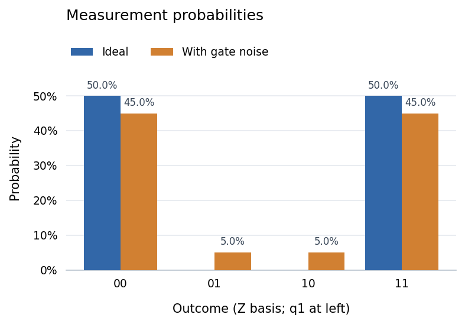

Examples
1) GHZ Circuit
A Hadamard followed by two CNOTs prepares (|000⟩ + |111⟩)/sqrt(2). Collect operations, then compile them into a circuit:
using BlueTangle
ops = [Op("H", 1), Op("CX", 1, 2), Op("CX", 2, 3)]
circuit = compile(ops)
state = to_state(circuit)
@assert correlation(state, "Z,Z", [1, 2]) ≈ 1
@assert correlation(state, "X,X,X", [1, 2, 3]) ≈ 1
circuit.stats(N = 3, len = 3, depth = 3, cx_count = 2, swap_count = 0, two_qubit_count = 2, mid_measurement_count = 0)2) Measurement and Correlations
A finite-shot measurement estimates computational-basis probabilities. An exact state or density matrix can evaluate other observables directly. These examples continue from the GHZ circuit above.
measurement = measure(circuit, 1000)
rho = to_rho(circuit)
exact_measurement = measure(rho) # exact basis probabilities, no shots
@assert correlation(measurement, [1, 2]) ≈ 1
@assert correlation(rho, "X,X,X", [1, 2, 3]) ≈ 1
(sampled_Z=measurement.expect, exact_Z=expect(rho, "Z"),
exact_ZZ=correlation(rho, "Z,Z", [1, 2]))(sampled_Z = [-0.040000000000000036, -0.040000000000000036, -0.040000000000000036], exact_Z = [0.0, 0.0, 0.0], exact_ZZ = 0.9999999999999998)measurement.bitstr contains integer basis labels and measurement.sample their estimated probabilities. Qubit 1 is the most significant bit. A single Z measurement distribution cannot determine arbitrary X/Y correlations; change the measurement basis or use the simulated state when it is available.
3) Plot circuits and measurement results
plotq prints a boxed text diagram by default, without a plotting package. Qubit 1 is at the top; controls, targets, and measurements share the wires.
using BlueTangle
feedback_ops = QuantumOps[
Op("H", 1), Op("CX", 1, 2), Op("RY(0.37)", 3),
Op("SWAP", 2, 3), Op("MZ", 2; if1="X")
]
plotq(feedback_ops)q1: ─[H]────●───────────────────────────────────────────
│
q2: ────────⊕──────────────────×────[MZ? 0: I; 1: X@q2]─
│
q3: ────────────[RY(0.37)]─────×────────────────────────plotqt is also available as a direct text renderer. For graphics, install PyPlot once (using Pkg; Pkg.add("PyPlot")), load it, and select it explicitly:
using PyPlot
fig = plotq(feedback_ops; backend=:pyplot)
savefigure(fig, "circuit_feedback.png")
Measurement plots also default to text. The following comparison uses exact probabilities of density matrices, so it isolates gate noise from sampling error.
bell_ops = [Op("H", 1), Op("CX", 1, 2)]
rho0 = zero_state(2) * zero_state(2)'
ideal = measure(apply(bell_ops, rho0); label="Ideal")
noisy = measure(apply(bell_ops, rho0; noise=NoiseModel("depolarizing", 0.08));
label="With gate noise")
plotq([ideal, noisy], ["Ideal", "With gate noise"])Measurement probabilities (Z basis; q1 at left)
Outcome Ideal With gate noise
00 50.0% 44.95%
01 0.0% 5.05%
10 0.0% 5.05%
11 50.0% 44.95%fig = plotq([ideal, noisy], ["Ideal", "With gate noise"]; backend=:pyplot)
savefigure(fig, "measurement_comparison.png")
Bitstring labels put qubit 1 on the left. Use rep=:int for integer labels. Large outcome sets show the largest max_outcomes=32 entries and group the rest as Other. fold wraps circuit diagrams: it measures characters for text and columns for graphics. savefigure(path) saves the current graphical figure.
4) Noise Models and Circuits
Gate noise is specified separately for one-qubit and two-qubit gates:
using BlueTangle, LinearAlgebra
n1 = Noise1("bit_flip", 0.001)
n2 = Noise2("depolarizing", 0.01)
noise = NoiseModel(n1, n2)
ops = [Op("H", 1), Op("CX", 1, 2), Op("CX", 2, 3)]
noisy_circuit = compile(ops, Options(noise=noise))
rho = to_rho(noisy_circuit)
@assert isapprox(real(tr(rho)), 1; atol=1e-12)
@assert eigmin(Hermitian(Matrix(rho))) >= -1e-12
correlation(rho, "Z,Z", [1, 2])0.9605309629629625NoiseModel("bit_flip", 0.001, "depolarizing", 0.01) is equivalent. Noise2(model, p) is the tensor product of the corresponding one-qubit channels: for depolarizing noise with p=0.01, each operand has a 1% nonidentity Pauli error, so the probability of at least one operand error is 1-(1-p)^2.
| Model | Parameter meaning |
|---|---|
amplitude_damping | Excited-state decay probability p |
phase_damping | Off-diagonal entries acquire a factor sqrt(1-p) |
phase_flip, bit_flip, bit_phase_flip | Apply Z, X, or Y with probability p |
depolarizing | Apply X, Y, or Z with total probability p, each equally likely |
rot_X, rot_Y, rot_Z, rot_P | Coherent rotation/phase angle in radians |
Statevectors and MPS sample one Kraus branch; density matrices sum all branches. A channel applied before final readout has a separate readout_noise option.
5) Custom noise models and gates
Built-in matrices are available as gate.X, gate.CNOT, or gate.T. Parameterized matrices use gates("RX(0.3)"), _RX(0.3), or the public functions U1, U2, and U3. A custom local matrix uses Op("my gate", matrix, qubit).
For a custom channel provide Kraus operators satisfying sum(K' * K for K in kraus) ≈ I:
using BlueTangle
p = 0.3
kraus = [sqrt(1-p)*gate.I, sqrt(p)*gate.Z]
@assert is_valid_quantum_channel(kraus)
channel = custom_noise(1, "my phase flip", kraus)
state = plus_state(1)
rho = state * state'
noisy_rho = apply(rho, Op(channel, 1))
@assert noisy_rho ≈ (1-p)*rho + p*gate.Z*rho*gate.ZThe constructor validates dimensions and the trace-preserving condition. Use custom_noise(2, name, kraus) for two-qubit Kraus matrices.
6) Conditional Mid-Measurements
A conditional measurement applies a branch chosen by its recorded bit. In this example, measure qubit 1 in X: outcome 0 applies Z, and outcome 1 applies H. Both Op("MX", 1; if0="Z", if1="H") and ifOp("MX", 1, "Z", "H") express this.
using BlueTangle
mid_ops = QuantumOps[Op("X", 1), Op("MX", 1; if0="Z", if1="H"),
Op("CX", 1, 2), Op("CX", 2, 3)]
mid_circuit = compile(mid_ops)
mid_rho = to_rho(mid_circuit)
mid_measurement = measure(mid_rho; label="Conditional circuit")
@assert real(mid_rho[1,1]) ≈ 0.25
@assert real(mid_rho[8,8]) ≈ 0.75
mid_measurement.sample2-element Vector{Float64}:
0.2499999999999999
0.7499999999999996The first X gate prepares |100⟩. Measuring qubit 1 in X gives |+⟩ or |−⟩ with equal probability. For outcome 0, Z maps |+⟩ to |−⟩, and the CNOTs make (|000⟩-|111⟩)/sqrt(2). For outcome 1, H maps |−⟩ to |1⟩, and the CNOTs make |111⟩, up to an irrelevant global phase. The final unconditioned Z probabilities are therefore 25% 000 and 75% 111.

Track a particular trajectory and its record explicitly:
trajectory, record = apply(mid_ops, zero_state(3); track_measurements=true)
@assert length(record) == 1
@assert only(record) in (0, 1)
record1-element Vector{Int64}:
07) Reset Operation on a Qubit
Reset measures a qubit in Z and applies X when necessary to return it to zero. It removes the qubit's entanglement; it cannot reset half of a Bell pair while preserving the original pure two-qubit state.
using BlueTangle, LinearAlgebra
bell = apply([Op("H", 1), Op("CX", 1, 2)], zero_state(2))
reset_rho = apply(bell*bell', Op("RES", 1))
@assert reset_rho ≈ Diagonal([0.5, 0.5, 0, 0])
trajectory = apply(bell, Op("RES", 1))
@assert expect(trajectory, "Z")[1] ≈ 1
reset_rho4×4 SparseArrays.SparseMatrixCSC{ComplexF64, Int64} with 2 stored entries:
0.5+0.0im ⋅ ⋅ ⋅
⋅ 0.5+0.0im ⋅ ⋅
⋅ ⋅ ⋅ ⋅
⋅ ⋅ ⋅ ⋅ The density matrix is the equal mixture of |00⟩ and |01⟩. One pure-state trajectory selects one of those two states.
8) Random Quantum Circuits
random_clifford(N, len) generates len Clifford gates; a measurement can be inserted after each gate with the chosen probability. Two-qubit gates use adjacent sites. Here is one realization with X/Z measurements:
using BlueTangle
random_ops_example = random_clifford(5, 20; measure_prob=0.2, measure_basis=["MX", "MZ"])
random_circuit = compile(random_ops_example)
plotq(random_circuit)q1: ────●──────────[S]───────────────[S]────────────×──────────[Y]─────────────
│ │
q2: ────⊕────[MX? 0: I; 1: I]────────[S]────────────×────[MX? 0: I; 1: I]──[S]─
q3: ─────────────────────────────────────────────────────────────●─────────[Y]─
│
q4: ──[S]──────────[S]─────────[MX? 0: I; 1: I]─────●────────────⊕─────────[Y]─
│
q5: ──[X]───────────────────────────────────────────●──────────[Z]─────────────
q1: ────────────────────────────────────────────
q2: ─[MX? 0: I; 1: I]───────────────────────────
q3: ──────────────────────×──────────[H]────────
│
q4: ─────────●────────────×────[MZ? 0: I; 1: I]─
│
q5: ─────────⊕──────────[H]──────────[H]────────
random_ops(N, depth) instead builds depth disjoint unitary layers, choosing from its mixed gate family and then independently measuring each site with probability measure_prob after each layer. It is not a Haar-random circuit ensemble, and its generation depth need not equal the rescheduled circuit depth. For a small ensemble experiment see example 19.
Operations through one entry point
Use Op to construct each kind of operation:
| Construction | Meaning |
|---|---|
Op("H", 1) | Local gate |
Op("MZ", 1; if0="I", if1="X") | Measurement with a branch chosen by the recorded bit |
Op(Noise1("bit_flip", 0.1), 1) | Kraus noise channel |
Op("block", [Op("H", 1), Op("CX", 1, 2)]) | Named operation sequence on the whole register |
Op("full", matrix) | Matrix acting on the whole register |
Op("transform", f) | Function taking and returning the whole state |
The objects remain distinct internally (Op, ifOp, OpQC, and OpF) because unitary gates, selective measurements, noise channels, and complete-register transformations have different semantics. Their existing constructors remain available. A parameterized local gate includes its qubit index, such as Op("rotation", theta -> _RX(theta), 1); this is different from a function of the whole state.
Circuit simplification cancels matching ideal gate identities. Applying a noise model to the shorter circuit then changes its noise exposure; simplification is not an equivalence of noisy channels.
using BlueTangle
block = Op("bell block", [Op("H", 1), Op("CX", 1, 2)])
state = apply(zero_state(2), block)
@assert correlation(state, "Z,Z", [1, 2]) ≈ 1
conditional_reset = Op("MZ", 1; if0="I", if1="X")
reset_state, record = apply(one_state(1), conditional_reset; track_measurements=true)
@assert record == [1]
@assert reset_state ≈ zero_state(1)Ensemble evolution and a measurement trajectory
Discarding a measurement outcome destroys coherence between its outcome sectors. Conditioning on one observed outcome instead gives a normalized conditional state. These are different density matrices:
using BlueTangle, LinearAlgebra
state = plus_state(1)
rho = state * state'
ensemble = apply(rho, Op("MZ", 1))
conditional, record = apply(rho, Op("MZ", 1); track_measurements=true)
@assert ensemble ≈ [0.5 0; 0 0.5]
@assert only(record) in (0, 1)
@assert isapprox(real(tr(conditional^2)), 1; atol=1e-12)
(ensemble_purity=real(tr(ensemble^2)), conditional_purity=real(tr(conditional^2)))(ensemble_purity = 0.4999999999999998, conditional_purity = 1.0)to_rho(circuit) and density-matrix apply sum unobserved noise and measurement branches. With track_measurements=true, measurement outcomes are sampled and returned alongside the conditional state. Statevectors and MPS states follow a single trajectory through stochastic operations.
Use measure(circuit, shots; backend=:statevector), :density_matrix, or :tensor to sample final outcomes. run(circuit, shots; backend=...) returns explicit mid-circuit records. On MPS, measure(psi) uses 1000 shots by default; exact probability enumeration with measure(psi, -1) is limited to 16 qubits unless the lower-level sample_exact limit is explicitly changed.
Optional PhasePoly backend
After installing PhasePoly separately, load it to activate the adapter:
using Pkg
Pkg.add(url="https://github.com/aydindeger/PhasePoly.jl") # optional, once
using BlueTangle
import PhasePoly
ops = [Op("H", 1), Op("H", 2), Op("CZ", 1, 2), Op("T", 1)]
compact = phasepoly(ops)
expect(compact, "X") # one expectation per physical qubit
correlation(compact, "X,Z", [1, 2]) # native compact Pauli calculation
amplitude(compact, [0, 1]) # amplitude of |01⟩
state = to_state(compact) # explicitly materialize the sparse state
@assert state ≈ apply(ops, zero_state(2))The adapter preserves BlueTangle's physical qubit labels, statevector ordering, and global phase. It supports a restricted noiseless gate family: affine permutations, supported diagonal phases, and Hadamards. Unsupported gates and noise raise errors. Leading and trailing Hadamard layers use efficient native paths; interior Hadamards require branching, and level-4 phases can also have exponential cost. Native Pauli queries avoid statevector materialization in the single-branch case. See ?phasepoly for phase-angle grids and cost guards.